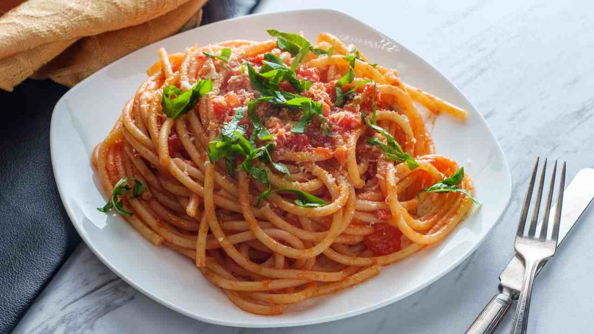

Pasta Al Tonno

Description
Pasta al tonno is pretty self-explanatory—it's pasta, with tuna—and a large part of its appeal is its
adaptability. Unlike iconic pastas such as carbonara,
there's no prescriptive yet heavily debated ingredient list that you'll get in trouble for deviating from when
making this dish. You can find it "in bianco" (no tomato); with canned
or fresh tomatoes; with olives; with capers; with anchovy; with chiles; with garlic or onion (but usually not
both); with parsley or basil. Canned tuna and dried pasta are the only nonnegotiables.
No matter what, pasta al tonno has to be "facile e veloce" (easy and fast) to prepare. The version that I grew
up with in Rome features spaghetti tossed with a quick garlic-infused tomato sauce.
It gets a touch of heat from dried peperoncino, and is finished with flaked olive oil packed tuna and a handful
of chopped parsley.
- 3 tablespoons (45ml) extra-virgin olive oil
- 3 medium garlic cloves (15g), lightly crushed
- 1/4 teaspoon red pepper flakes
- One 28-ounce (800g) can whole peeled tomatoes, coarsely crushed by hand
- Kosher salt
- 1 teaspoon (5ml) fish sauce (optional)
- 10 1/2 ounces (300g) olive oil-packed tuna, drained and gently flaked into 2-inch pieces (see note)
- 12 ounces (340g) dried long pasta such as spaghetti, spaghettoni, bucatini, or linguine
- 1 packed cup (3/4 ounce; 25g) flat-leaf parsley leaves and tender stems, finely chopped
-
In a large skillet or straight-sided saute pan, combine oil and garlic. Cook over medium heat,
turning garlic cloves occasionally, until garlic is deep golden brown on all sides, about 5 minutes.
Using tongs or a slotted spoon, remove garlic from skillet; discard garlic.
Add red pepper flakes and continue to cook, stirring constantly, until fragrant, about 30 seconds.
- Add tomatoes, season lightly with salt, and bring to a simmer. Cook, stirring occasionally, until oil is
emulsified and sauce is thickened slightly, about 10 minutes. Reduce heat to medium-low,
add fish sauce (if using) and tuna, and stir gently until just incorporated into sauce, taking care to keep
pieces of tuna as intact as possible.
- Meanwhile, in a pot of salted boiling water, cook pasta until just shy of al dente (about 2 minutes less
than the package directs).
Using tongs, transfer pasta to sauce, along with 1/4 cup (60ml) pasta cooking water. Alternatively, drain
pasta using a colander or fine-mesh strainer,
making sure to reserve at least 1 cup (240ml) pasta cooking water.
- Increase heat to high and cook, stirring and tossing rapidly, until pasta is al dente and sauce is thickened
and coats noodles, 1 to 2 minutes,
adding more pasta cooking water in 1/4 cup (60ml) increments as needed to adjust consistency of sauce.
Remove from heat, add parsley, and stir to combine.
Season with salt to taste. Serve immediately.